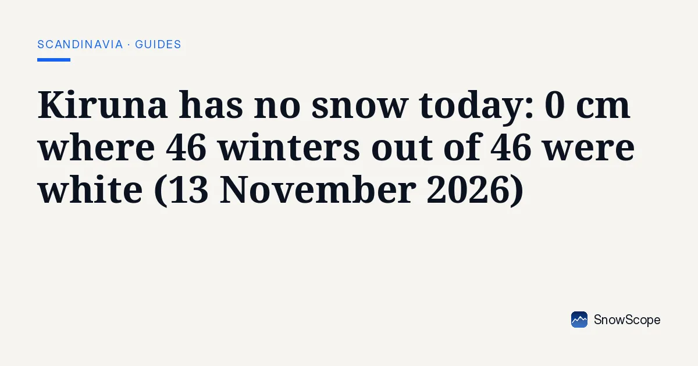

Kiruna has no snow today: 0 cm where 46 winters out of 46 were white (13 November 2026)
Kiruna, nestled at 519 m in Swedish Lapland, has stayed bare through mid-November despite sitting in one of Europe's most reliable snow zones. The weather station in town recorded nothing on Friday, and the entire week has seen no accumulation. This marks the first time in at least 46 years that the ground here has been bare on this date.
See the live snow forecast for Kiruna in the SnowScope appSnow depth, powder alerts and the 3D map, free.
Breaking a 46-year pattern
Since records began, every single winter through the past 46 years left snow on the ground at Kiruna by 13 November. The typical depth for this date is 23 cm. In lean years, skiers could expect 14 cm; in generous ones, 35 cm or deeper. The long-term record shows that in half of all winters, snow had already set in by 2 October—more than a month ago.
The recent sequence tells the story of how unusual today is. The 2021–22 winter arrived with 45 cm by this date. Last year brought 24 cm. The year before that, 40 cm. Even the thin 2024–25 season managed 7 cm here by mid-November. This bare ground is a first.

Snow exists, but kilometres away
The nearest white ground lies on the mountains northwest towards the border. Katterjåkk, at 514 m near Riksgränsen on the Norwegian side, sits under 9 cm of snow. Abisko, 80 km further out, holds 2 cm. The pattern across the whole of Swedish Lapland north of the Arctic Circle is striking: only 5 out of 22 measurement stations north of this latitude recorded any snow on the 13th.
The cold air mass is in place. Overnight lows have been dropping to around −9 °C. The missing ingredient is moisture. The precipitation that fell this week tracked south instead, leaving Kiruna and the lower Torne valley in a dry pocket. The weather system that brought snow to central Sweden and the coast near Umeå passed to the side.
What the weekend brings
Saturday stays clear and bitter, with temperatures around −14 °C. Sunday turns active, with the first snow of the week likely, bringing 1 to 2 cm. Monday adds another possibility: some forecasts show up to 3 cm, others closer to 1 cm. That will whiten the landscape but falls far short of a skiable base.
Compare this to the median depth Kiruna usually carries by 1 December (40 cm) and mid-December (49 cm). To build from zero to even a thin foundation will take several more systems like this one. The mountains towards Riksgränsen will fill first; the town and valley floor will remain marginal for weeks unless conditions change.
What this means for winter activity
Early-season plans built around the town of Kiruna itself need rethinking. Snowmobile tours, dog-sledding, and ground-based activities require a continuous cover, not scattered patches. Ski resorts and mountain huts in the high terrain—especially across the border or at higher elevations—will develop snow faster than the lowlands.
On the practical side, the bare frozen ground poses its own hazard. Lakes and puddles are freezing without snow cover on top, creating black ice on paths and roads. This weekend's cold makes that risk acute. Drivers and walkers should expect treacherous surfaces despite the lack of visible snow.
The bigger picture: late start to the season
A bare mid-November is not a sign the winter will fail—Kiruna's past winters have recovered from slow starts—but it does signal a delayed entry to the season. Some winters in the recent record (2024–25 notably) landed soft snow early but thinned by January. Others, like 2021–22, piled up fast and stayed deep. The trend this week suggests a slow burn rather than an autumn dump.
The key date to watch is early December. If Kiruna reaches 25–30 cm by then, a normal winter remains possible. If the bar stays this low through late November, visitors should plan for a patchy early season or aim for the mountains and higher elevations where snow tends to anchor earlier and last longer.
Tips for skiers
- If your trip to Kiruna is booked for November, contact your tour operator now. Ground-based activities (dog sledding, snowmobiles, walking) need a continuous snow cover; ask what can run on bare or frozen earth.
- Head to the high mountains near Riksgränsen rather than the town of Kiruna itself. At 514 m, Katterjåkk already holds 9 cm, and higher slopes will accumulate faster.
- Watch the black ice risk this weekend. Frozen ground without snow on top creates invisible hazards on paths, roads, and surfaces. Drive and walk carefully in the −14 °C cold.
- Track the SnowScope snow map into early December. If Kiruna reaches 25–30 cm by 1 December, the season is tracking normally. If not, plan for a thin early stretch.
- Pack layers and waterproof gear. The forecast includes light snow Sunday and Monday; moisture and cold together can make conditions damp and demanding even when depths are shallow.
About these numbers
Resort snow depths are the deepest snow on the resort's upper slopes on the date shown; they are estimates for an area, not a measurement at one point. Forecasts can change. Always read the official avalanche bulletin before going off-piste.
Cite this report
For research, teaching or the press: the numbers and charts are free to reuse under CC BY 4.0 with this citation.
SnowScope (2026), Kiruna has no snow today: 0 cm where 46 winters out of 46 were white (13 November 2026), https://snowscope.app/blog/en/2026/11/kiruna-snow-depth-13-november-2026.html, accessed 2026-11-13
SnowScope (Atlas Labs). (2026, November 13). Kiruna has no snow today: 0 cm where 46 winters out of 46 were white (13 November 2026). SnowScope snow reports. https://snowscope.app/blog/en/2026/11/kiruna-snow-depth-13-november-2026.html
BibTeX
@misc{snowscope2026kirunasnowdepth13novembe,
author = {{SnowScope (Atlas Labs)}},
title = {Kiruna has no snow today: 0 cm where 46 winters out of 46 were white (13 November 2026)},
year = {2026},
month = nov,
howpublished = {\url{https://snowscope.app/blog/en/2026/11/kiruna-snow-depth-13-november-2026.html}},
note = {Published 2026-11-13 19:29 UTC; accessed 2026-11-13}
}· CC BY 4.0 · Methods, data and tools →
Follow Kiruna
Free: a message when fresh snow is coming, and the forecast every morning.
More snow reports

Kvitfjell has about 5 cm at the top on 14 November 2026, well behind the usual 27 cm. Upper slopes will gain snow this week; the base stays wet.

Sälen station near Kläppen measured 45 cm on 13 November after one night of heavy snow. Rain and mild air arrive this week. Data from 13 November 2026.

Idre Fjäll's December snow odds improve sharply after mid-month. On 13 November, the typical mid-mountain depth on 15 December is 32 cm.